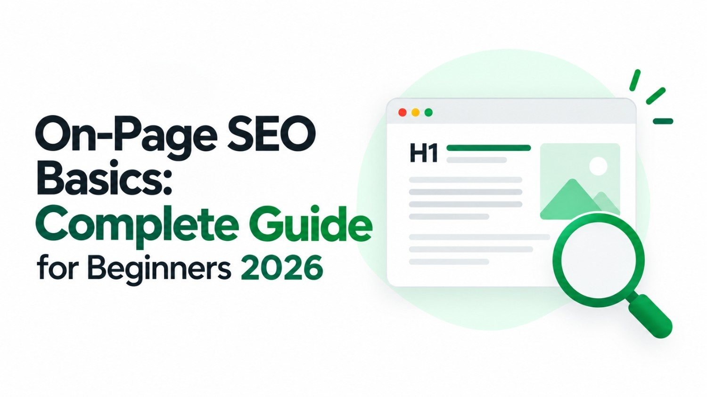

If you want your website to show up when people search on Google, on-page SEO is where everything begins. It is the practice of fine-tuning the elements within your own web pages - content, structure, and HTML - so that search engines can read, understand, and rank them confidently. Unlike link building or technical infrastructure, on-page SEO is entirely within your control, making it the most practical starting point for anyone new to search optimization.
This guide walks you through every core on-page SEO technique in plain language, so you can take action immediately - whether you run a small business website, a blog, or an e-commerce store.
What Is On-Page SEO?
On-page SEO refers to all the optimizations you make directly on a web page to improve its position in search engine results. The term "on-page" simply distinguishes these techniques from off-page activities (like earning backlinks) and technical work (like improving server speed).
When a search engine like Google crawls your page, it looks at dozens of on-page signals to determine two things: what the page is about and how well it serves the people searching for that topic. The better your on-page signals, the more likely Google is to show your page to the right audience.
Quick insight: On-page SEO is not about tricking search engines. It is about presenting your content as clearly and helpfully as possible, so both users and algorithms immediately understand its value.
Step 1 - Keyword Research Before You Write
Every strong on-page SEO strategy begins before a single word is written. You need to understand what your target audience is actually typing into search engines, and then build your page around those terms.
How to choose the right keyword
A good target keyword for a beginner meets three criteria. First, it should have enough monthly search volume to make optimization worthwhile - typically at least a few hundred searches per month. Second, it should be achievable in terms of competition; targeting highly contested terms when your site is new leads to frustration. Third, it must match the purpose of your page.
There are Four types of search intent, and your keyword must align with your content type:
There are Four types of search intent, and your keyword must align with your content type:
-
Informational intent - The searcher wants to learn something. Example: "what is on-page SEO." Blog posts and guides suit this intent best.
-
Commercial intent - The searcher is researching options before buying. Example: "best SEO tools for small businesses." Comparison pages and in-depth reviews work well here.
-
Transactional intent - The searcher is ready to take action. Example: "hire an SEO agency." Service pages and landing pages serve this intent.
-
Navigational intent - The searcher wants to find a specific website or brand. Example: "Ahrefs login" or "Bamboost SEO services." Homepage, login pages, or dedicated brand pages are best suited for this intent.
Placing your primary keyword naturally throughout your page - without forcing it - signals relevance to search engines while keeping the reading experience smooth for your audience.
Step 2 - Optimizing Your Title Tag
The title tag is the clickable headline that appears in Google search results. It is one of the most powerful on-page ranking signals available to you, and it is also the first impression your page makes on a potential visitor.
Writing a title tag that ranks and gets clicked
- Place your primary keyword near the beginning of the title wherever it reads naturally.
- Keep your title between 50 and 60 characters so it does not get truncated in search results.
- Make it descriptive and specific - vague titles fail to attract clicks even when they rank.
- Avoid stuffing multiple keywords into a single title tag; focus on one clear topic.
| Example Title | Assessment |
|---|---|
| On-Page SEO Basics: A Complete Beginner's Guide for 2026 | Strong |
| SEO Tips SEO Guide SEO Beginners Page Optimization | Weak - keyword stuffed |
| My Blog Post About SEO | Weak - too vague |
| How to Do On-Page SEO in 2026 (Step-by-Step) | Strong |
Step 3 - Writing a Compelling Meta Description
A meta description is the short paragraph that appears beneath your title in search results. While it is not a direct ranking factor, it has a significant influence on your click-through rate - the percentage of people who see your result and choose to visit.
An effective meta description summarizes the page content accurately, incorporates the primary keyword naturally (Google often bolds it in results, drawing the eye), creates a sense of value or curiosity, and stays within 150 to 160 characters. Think of it as a micro-advertisement for your content. A page that ranks fifth with a compelling meta description will often receive more clicks than the page ranked third with a dull one.
Pro tip: Write your meta description for the human reader first. If it clearly communicates what they will gain from clicking, it is doing its job. Including a light call to action like "Learn how," "Discover," or "Find out" can lift click rates noticeably.
Want an Expert to Audit Your SEO?
Our specialists will analyse every element of your pages and give you a clear action plan
Step 4 - Using Headings Correctly (H1 to H6)
Headings create a clear hierarchy within your content, making it easier for both readers and search engines to navigate. Think of them as the chapter titles and section markers of a book.
The Page Title - Use Once Per Page
Your H1 should reflect the primary keyword and communicate the central topic of the page. Every page must have exactly one H1. It is typically the largest heading the visitor sees when they land on your content.
Main Section Headings
H2 headings divide your content into major sections. These are excellent places to include related keywords and secondary phrases, as Google reads them as strong contextual signals about subtopics covered on the page.
Subsection Headings
H3 headings break H2 sections into smaller, more specific points. They help readers skim and locate the exact information they need, which reduces bounce rates - a positive behavioural signal for SEO.
Common mistake: Many beginners use heading tags for styling purposes rather than structural ones, placing H2s wherever they want larger text. This confuses search engines about your page structure. Use CSS to control font sizes, and use heading tags only to signal hierarchy.
Step 5 - Creating Content That Earns Rankings
Content quality is the single most influential on-page factor. Search engines are increasingly sophisticated at evaluating whether a page genuinely helps its visitors, and content that only ticks keyword boxes without delivering real value struggles to rank long-term.
What makes content rank?
- Depth and completeness - Cover the topic thoroughly enough that a reader does not need to visit another website to fill in gaps. Pages that satisfy a query completely experience lower bounce rates and longer dwell times, both of which Google monitors.
- Originality - Produce insights, examples, or perspectives that are not simply lifted from other sources. Google's algorithms are designed to surface unique, first-hand perspectives over recycled content.
- Readability - Use short paragraphs, clear sentences, and logical flow. A page that is exhausting to read loses visitors quickly, regardless of how accurate the information is.
- Keyword placement - Include your primary keyword in the first 100 words of your body content, within at least one H2 heading, and a few times naturally throughout - without forcing it.
- Semantic keywords - Use related terms and phrases that naturally appear around your primary topic. This signals topical authority and helps the page rank for a broader cluster of related searches.
Step 6 - Structuring Your URL
A clean, descriptive URL communicates the page topic to both users and search engines at a glance. Good URLs are short, contain the primary keyword, and use hyphens to separate words. They avoid unnecessary numbers, dates, or automatically generated strings of characters.
| URL Style | Example | Assessment |
|---|---|---|
| Descriptive | /blog/on-page-seo-guide | Ideal |
| With date | /blog/2026/03/28/seo-post-5 | Too long |
| Auto-generated | /p=4821 | No value |
| Overly long | /the-complete-on-page-seo-basics-guide-for-all-beginners-2026 | Too wordy |
Step 7 - Optimizing Images for SEO
Images enhance the user experience, but they also present SEO opportunities that many beginners overlook entirely. Every image on your page has several properties that can be optimized.
- Alt text - This is a brief description of the image written in the HTML. Search engines cannot "see" images the way humans do, so they rely on alt text to understand what an image depicts. Write descriptive, keyword-relevant alt text for every meaningful image on the page.
- File name - Before uploading an image, rename the file to reflect its content. A file named "on-page-seo-checklist.jpg" provides far more context than "IMG_00412.jpg."
- File size and format - Large images slow down page loading, which negatively affects both user experience and rankings. Compress images before uploading and consider modern formats like WebP, which offer excellent quality at smaller file sizes.
Step 8 - Internal Linking Strategy
Internal links are hyperlinks that connect one page on your website to another page on the same website. They serve two purposes simultaneously: they help visitors discover related content, and they distribute what SEO professionals call "link equity" across your site - essentially passing authority from stronger pages to newer or less established ones.
A thoughtful internal linking approach involves linking to relevant content naturally within your body text using descriptive anchor text. Rather than writing "click here," use anchor text that describes the destination, such as "our guide to technical SEO" or "how to build backlinks for beginners." These descriptive anchors give search engines useful context about the linked page's topic.
Strategy tip: When you publish a new page, revisit your older, higher-traffic pages and add a link to the new one where it makes contextual sense. This funnels existing traffic and authority to content that would otherwise start from zero.
Step 9 - Page Experience Signals
Google increasingly uses how people interact with your page as a proxy for quality. If visitors arrive and leave immediately, that signals a mismatch between what the page promised and what it delivered. On-page SEO, therefore, extends into elements that shape the reading and browsing experience.
- Mobile responsiveness - More than half of all global web searches happen on mobile devices. A page that does not adapt to smaller screens will lose visitors and rank lower, since Google uses mobile-first indexing.
- Page loading speed - Slow pages frustrate users, leading to higher abandonment rates. Compress media files, minimize render-blocking scripts, and use browser caching to improve load times.
- Content above the fold - Ensure that meaningful content is visible without scrolling when a visitor first lands on the page. Pages that greet visitors with large banner ads or unrelated imagery before any substantive content often perform poorly.
- Readable font sizes and line spacing - Small text or cramped line heights make content difficult to read on mobile. Use a minimum font size of 16px and comfortable spacing to improve readability.
Step 10 - Schema Markup (Structured Data)
Schema markup is a form of code added to your HTML that gives search engines extra context about your content. It is not required for basic on-page SEO, but it is a powerful way to stand out in search results once you have the fundamentals in place.
When implemented correctly, schema can enable rich results - enhanced search listings that display star ratings, FAQs, event dates, product prices, or how-to steps directly within Google's results page. These enhanced displays increase visibility and attract more clicks compared to standard text listings.
Common schema types useful for beginners include Article schema for blog posts, FAQ schema for pages that answer common questions, and LocalBusiness schema for businesses that serve a specific geographic area.
Your On-Page SEO Checklist
Before publishing any page, run through these core optimizations to make sure nothing is missing.
Keyword Research Completed
Primary keyword identified with clear search intent. Secondary and semantic keywords noted for natural inclusion throughout the content.
Title Tag & Meta Description Written
Title is 50–60 characters with keyword near the front. Meta description is under 160 characters and reads as a compelling mini-advertisement.
Heading Structure in Place
One H1 per page. H2s mark major sections. H3s break down subsections. Keywords appear naturally in headings where appropriate.
Content Is Original and Complete
The page thoroughly addresses the search query with unique insights. Primary keyword appears in the first 100 words and naturally throughout the body.
Images Optimized
All images have descriptive alt text and keyword-relevant file names. Files are compressed for fast loading.
Internal Links Added
At least two to three relevant internal links with descriptive anchor text point to related pages on your site.
Conclusion
On-page SEO is the foundation that everything else in search optimization is built upon. Without well-structured pages, clear content, and properly optimized elements, even the strongest backlink profile or fastest server will not deliver consistent rankings.
The good news is that on-page SEO is entirely within your hands. Every technique covered in this guide can be implemented without any external dependencies - no waiting for other websites to link to you, no waiting for a developer to fix server configuration. You can begin optimizing today.
Start with the fundamentals: get your keyword research right, write titles and meta descriptions that earn clicks, and create content that genuinely helps your audience. Master those three areas first, and the rest of on-page SEO will feel far more manageable as you build your skills.
If you would like expert support implementing these techniques on your website, Bamboost's SEO team is ready to help you turn these principles into measurable growth.